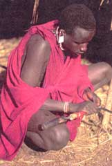

Although you may not pluck your weeds, it's nevertheless true that people everywhere curse these plants which grow relentlessly even in adverse conditions. Many gardeners are irked by the notion that, while roses need particular conditions, pesky weeds burst forth in shade, in sun, in spring and in fall. But John R. Stepp and Daniel Moerman, Ph.D,. don't think this annoyance is really anything about which to grumble. In their study published in the March 15, 2001 issue of the Journal of Ethnopharmacology, they argue that beneficial weeds often have important medicinal purposes.
Stepp, a doctoral student at the University of Georgia, teamed up with Moerman, a professor at the University of Michigan in Dearborn, and found that plants with colorful flowers growing in what they term "disturbed areas" were the most useful to indigenous people.
Brightly colored flowers draw butterflies, hummingbirds and bumblebees to the flower, pollinating them abundantly; humans are drawn to them because they are easy to recognize and remember. With the work done by their pollinators, these beneficial weeds become highly potent, a process that heightens their medicinal qualities.
Many weeds have multiple uses. Stepp wasn't originally focusing on weeds; rather, he thought that conserving medicinal plants was important. When he found that indigenous people didn't search primary forests, but instead used the "living pharmacy" within a few minutes of their homes, he concluded, "This is the danger of economic evaluation. Even if you found medicinal value in plants from the rainforest, they could be easy to synthesize, and then there is no more need for conservation. We need to conserve nature for intrinsic reasons."
Relying on medicinal potential, say these anthropologists, suggests that only that which aids the consumer has value. Stepp explains, "The Maya have no concept of these plants as weeds. There is a symbiotic relationship there,"- a finding that supports the idea that weeds are a cultural construct and primary forests and tropical places are not the only valuable ecosystems.
While everyone, conservationists and average Americans alike, should take a second look at the plants in our backyards and along the roadside to discover the medicines that have been helping indigenous people for centuries, Moerman warns that natural drugs are often more potent than synthetic medicines, which can render them toxic and even poisonous when ingested in large dosages.
|
 PHOTO: STOCK MARKET PHOTO Better health from your yard: Some weeds have beneficial medicinal purposes. |
|
|